下面是一个线上用户反馈的卡死问题。追踪到底，问题原因可能很简单，却是每个人都可能犯的低级致命错误。
背景
这是App中一个重要的实时唱玩互动场景，并且自带竞技和社交属性，自上线以来集聚了不少忠实用户，不乏重度玩家。某个版本后该场景内新增直接反馈功能，带来持续新增用户反馈，产运研团队更希望籍此能发现、解决一些核心痛点问题，进一步提升用户体验，为后续的用户增长和数据转化提供更好的支撑。
该反馈功能灰度一周后，卡慢闪退反馈占比达到16%之高。实时互动玩法对性能要求较高、而用户对PK结果又高度敏感，随着反馈量的持续上涨，查证、解决问题的紧迫性，用刻不容缓来形容并不为过。以下是当时的一个典型案例。
一个不太特别的堆栈
对于卡慢问题，最终还是要归因到业务栈。通常我们可以从卡顿卡死监控系统中获取到对应的问题堆栈，然后基于问题堆栈，结合反馈信息&问题场景，来推进问题优化。
在解决了一波反馈问题后，在众多的卡死问题堆栈中，我们留意到一个引起WatchDog卡死崩溃的问题堆栈:
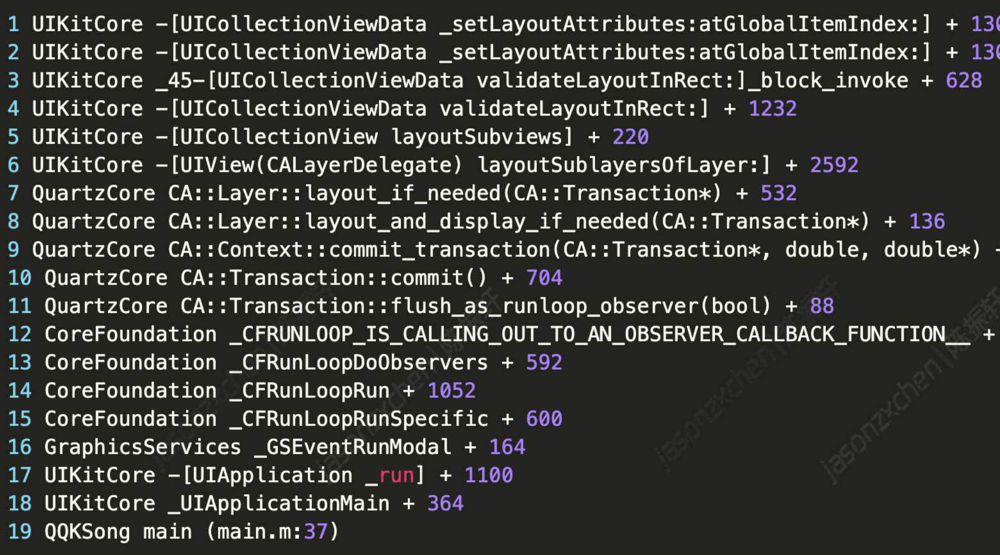
这个主线程堆栈，既常见又不常见。“常见”在于这是一个UIKit的堆栈；而”不常见”在于，一般的卡死堆栈都会有对应的业务堆栈，而这个主线程堆栈只有系统符号，并且里面并没有阻塞性API调用。
所以可能是什么问题引起的卡死？如果是业务问题引起的，业务入口堆栈又是什么呢?
回头看用户反馈是这样的:
总是卡顿闪退，然后我明明分数高过对方的就变成0分，还说我“逃局次数多
用户的反馈意见里，关于卡慢闪退的有效信息不多。场景主要为用户实时对唱互动。我们不清楚是哪个环节出现问题的一-该互动场景涉及比较多的交互环节，包括准备、匹配、进房、PK过程、结算等，尤其PK过程涉及伴奏、RTC、打分、歌词渲染、动画、跨端等多个功能模块。比如因为实时合唱声伴同步的机制，网络抖动除了可能引起声音卡顿外还会有界面卡顿的表现，对于用户反馈的一些卡慢问题较难定位。并且因为是PK场景，用户情绪化反馈的意见也很多。实际上还有其他几个用户类似的卡慢闪退反馈，有些也并没有关联的watchDog上报。这对我们问题定性、聚类分析也带来了干扰。
我们首先尝试复现，但相同的歌曲在线下并没有出现类似问题。
按现有信息，确实很难进行问题归因。但经验告诉我们，遇到难以解决问题的时候，需要我们大胆推测、努力求证。
我们可以从异常现场分析(日志&Crash现场&性能监控）和代码逻辑两个方面着手，抓住蛛丝马迹，大胆推测查证。
查证过程
因为主线程堆栈没什么眉目，我们转而希望从用户日志或性能监控方面能找到一些共性表现。
【共性挖掘】
从该用户日志得到的基本信息:
1、用户端17:07:19后没有日志，17:08:19重启App，客户端退出归因判断为前台OOM（退出归因识别错误）
2 App退出前，最后输出日志的业务是打分逻辑
性能数据表现上，
1、CPU方面，用户端17:07:31 CPU占用率上涨到21%+57%=78%，17:08:06上涨到20%+62%=82%(注:径同perfdog，核心数归一化的CPU占用率)
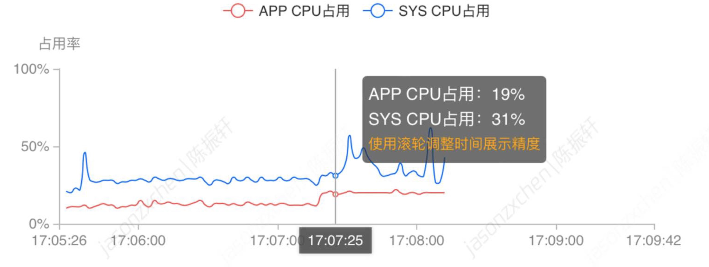
2、内存消耗稳定(排除前台OOM)
3、音视频方面，在WatchDog前传输、播放延迟及音频卡顿较明显
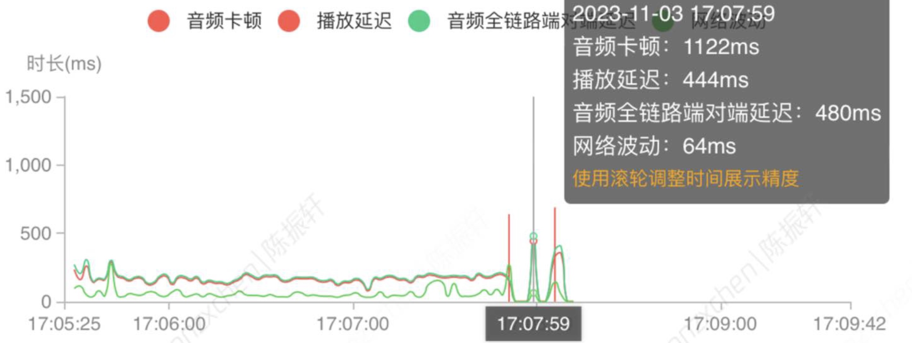
排查到这里，似乎有些线索、但不多。我们再将当时类似反馈的几个对局日志以及性能表现梳理后，确实发现些共性:
1、CPU占用率暴涨，甚至极端的占用率会到100%
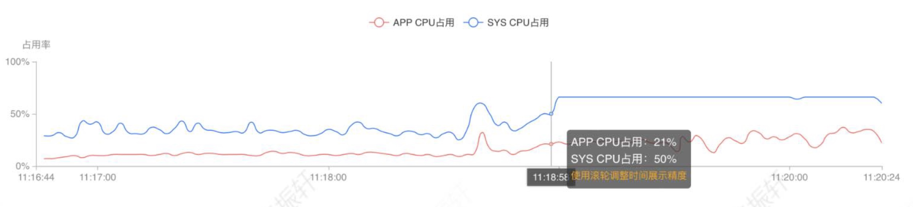
2、普遍出现音频卡顿，但与CPU占用率变化因果关系未明确
3、日志分析App退出前未发现固定业务日志或规律
【进一步合理推测】
推测一:界定堆栈归属业务
业务场景内，有布局更新的UICollectionView基本可确定是顶部的Midi组件。在最初分析异常堆栈时我们就首先怀疑过Midi音准组件以及打分逻辑是否有线程死锁或性能问题。
这是内部开发的Midi音准渲染组件，其内部维护一个 render loop，按指定的顿率进行渲染(业务场景内是30FPS)，每帧会判断干声数据是否match，来决定是否染色。
其伪代码如下:
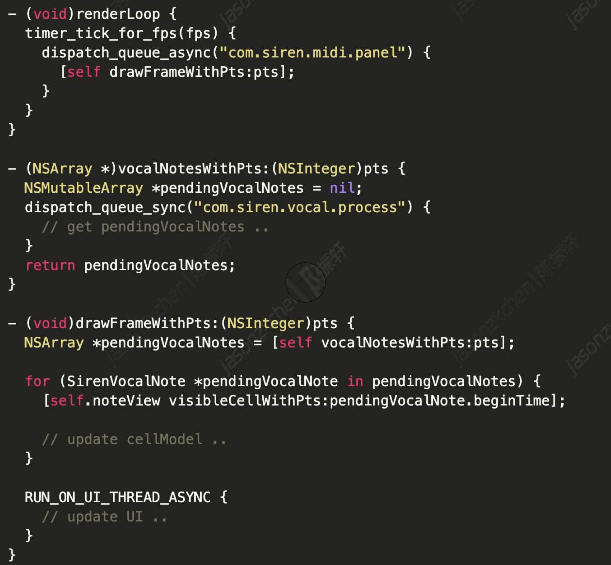
可以看到Midi组件render loop渲染过程存在3个串行队列的交互:
1）帧渲染回调是在”com.siren.midipanel”串行队列
2）Vocal人声数据的处理是在”com.siren.vocalprocess”串行队列
3）UI渲染在主线程队列
在Midi或UI渲染以及更新打分数据、Seek等过程中，3个串行队列内是存在阻塞性的调用的，如果队列操作有误、有产生线程问题的风险。
推测二:卡死&CPU暴涨原因
首先怀疑线程死锁问题，从火眼全线程堆栈可以看到，发生WatchDog时渲染队列有锁等待。
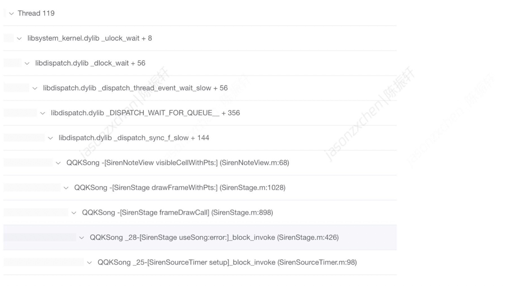
但主线程没有锁，有猜测过是否子线程死锁导致卡死。但这个猜测很快被否定了，原因一是子线程死锁并不是引起watchdog的条件，二是线程死锁不会导致CPU暴涨。
线上零散有几个类似的反馈，但问题在线下没有复现。我们尝试增加约束收缩范围：
- 是否只跟特定歌曲有关
- 是否与机型有关
- 是否与操作系统有关
- 是否与对手的操作有关
同时我们尝试完全复刻反馈用户的环境与操作，幸运的是在机型、操作系统以及歌曲一致的情况下，问题复现出来了。
确认了问题业务场景，结合问题线程堆栈，问题的真实原因也逐步排查出来
为什么没有业务堆栈
我们回头看Midi组件的render loop渲染逻辑:
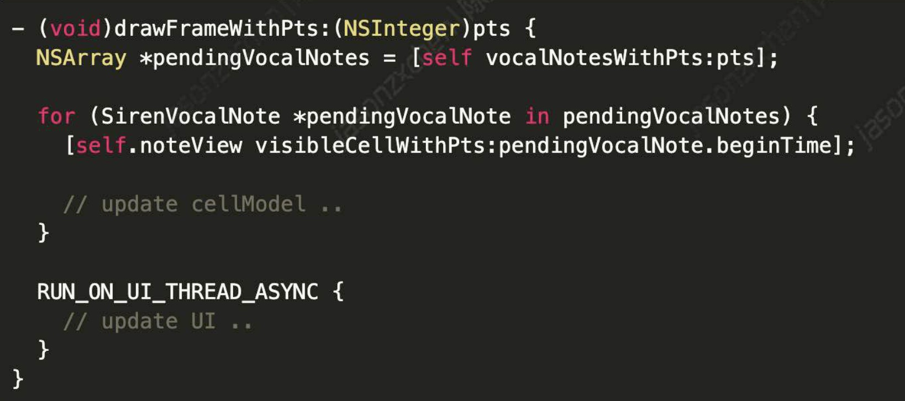
上面方法可以简单理解为在Midi渲染线程中，首先找到当前pts对应的人声分段数据，然后找到对应的Midi分段UI元素，最后在UI线程提交更新。
可以留意到，’-visibleCelWithPts;正是Midi渲染线程发生锁等待的业务入口方法。-visibleCelWithPts;的实现是这样的:
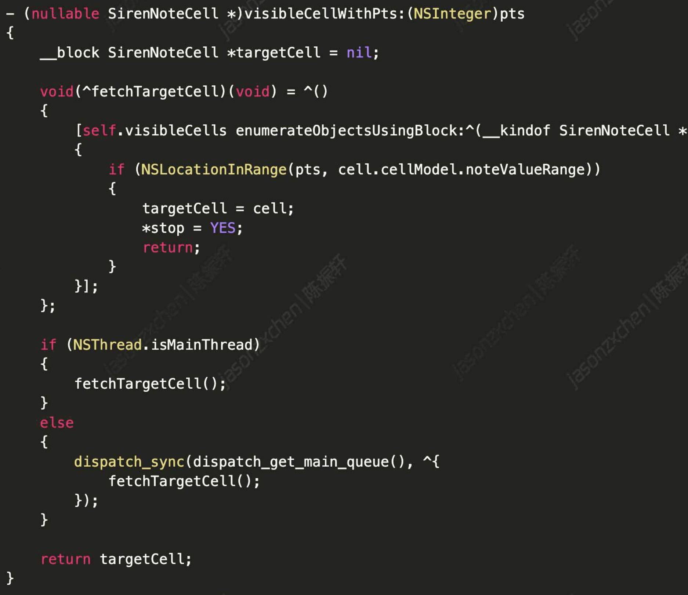
因此Midi渲染线程在向主线程查询UI元素时，向主队列提交了fetchTargetCel的block，并且是同步调用等待主线程查询结果。
这里涉及到Runloop与GCD的一些知识。我们需要知道的是iOS的界面更新与动画机制是Runloop驱动的,QuartzCore也就是CoreAnimation的框架注册了一个 Observer 监听BeforeWaiting事件，回调里检查触发约束与布局更新、并将视图渲染树提交给渲染服务。
而对于libdispatch，非主线程队列的任务是内部调度，但对于libdispatch中提交的到主线程队列的block，则是转发到Runloop、唤醒后在 __CFRUNLOOP_IS_SERVICING_THE_MAIN_DISPATCH_QUEUE 回调里执行。
于是按照iOS Runloop的执行顺序，dispatch_sync到mainQueue后必须等到Runloop休眠后唤醒执行，而在唤醒执行回调前，在Runloop休眠前QuartzCore会执行一次界面更新渲染的操作。
因此在dispatch sync到mainQueue后、Runloop休眠前主线程发生卡死、繁忙的情况时，我们在主线程堆栈只看到的是UI布局更新的代码(这里是可见区域发生改变触发更新)，而fetchTargetCel的block尚未执行、并且被阻塞了。
卡死原因
进度推到这里，问题已经基本清楚，Midi组件因为布局问题导致主线程“卡死”。我们仍需要继续追查业务上的原因。
首先按照上述的分析结论，dispatch_sync到mainQueue被阻塞、而主线程并未阻塞，同时CPU暴涨，这些都指向主线程繁忙。
动态调试，可以看到UICollectionView的一些属性，contentSize={1.6153015826365747e+18,172]
显然是一个异常值。
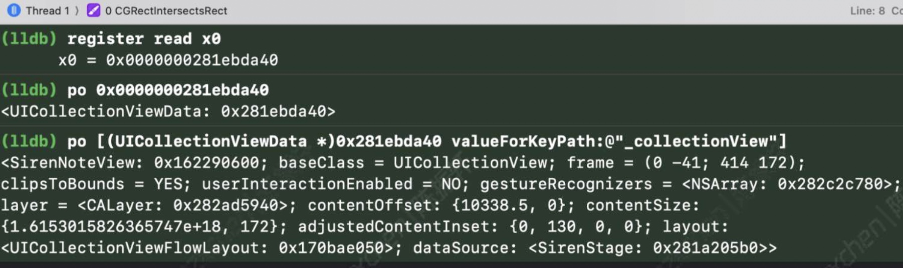
接着我们还发现了-[UICollectionViewData _setLayoutAttributes:atGlobaltemIndex:]方法中存在着循环调用的路径(只在iOS 14、15部分系统，这也是最终导致方法无法结束返回、CPU使用率暴涨的原因。
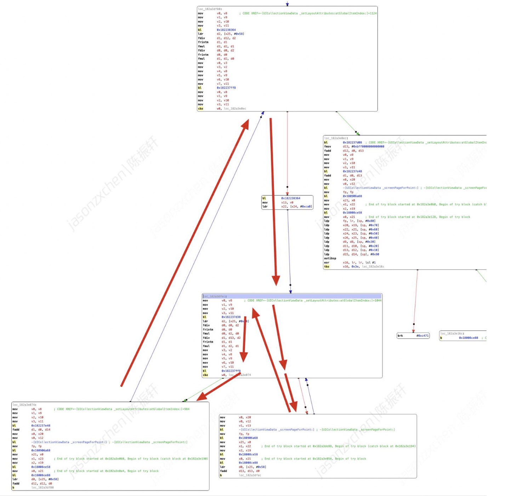
调试发现，根据CGRectIntersetsRect传入的异常参数显然是CGRect的size.width。
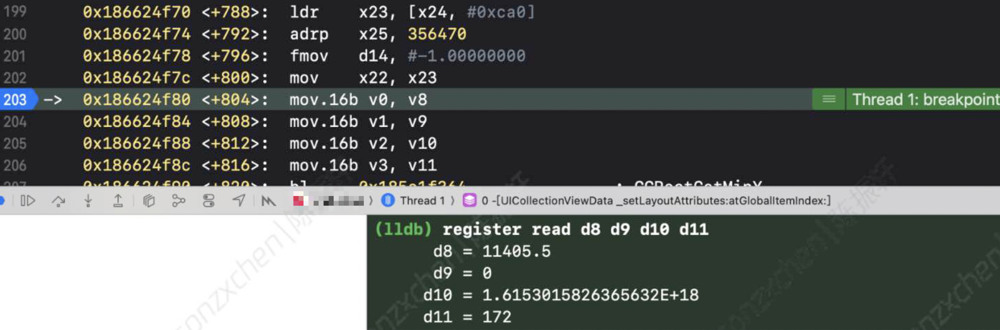
最后结合日志及代码逻辑分析，沿着异常数据的方向，我们发现问题代码在下面这行看上去很普通的代码上:1
MidiNote *restNote = [MidiNote restNoteWithRange:NSMakeRange(note.endTime, self.duration - note.endTime)]
duration是业务传入的歌曲时长，这里客户端是读取后台Songlnfo的信息，而后台Songlnfo返回的时长数据精度是精确到秒级的。为了统一到毫秒级别，业务传入Midi组件的duration是毫秒级的，传入时按Songlnfo的时长 * 1000计算)。
而endTime则是歌曲解据精度是精确到秒，析的尾段结束时间，精确到毫秒。
这样导致对于duration精度丢失后，可能会概率性出现duration时长小于note.endTime的情况，也就出现(self.duration - note.endTime)< 0的情况。
而Midi组件计算分段长度未对length<0的情况进行校验；同时当NSMakeRange函数调用时，发生类型转换 (NSMakeRange将int强转uint)后，一个很小的负数转成了一个很大的正数，产生了一个巨大的Cell，并在iOS 14/15上触发bug。
这也是为什么我们只在特定歌曲和操作系统版本上才复现了问题。理论上Songlnfo返回duration精度丢失，四舍五入舍掉的歌曲都可能出现该问题。
后话
数据精度丢失，以及数据类型不一致，是开发过程中常见的一类问题，很多开发也并未在意，却不经意间埋下了雷。
而性能问题的优化，犹如排雷作业，只能在蛛丝马迹中寻找答案。很多问题都是爬山涉水、山重水复过后，才会柳暗花明。
Comments